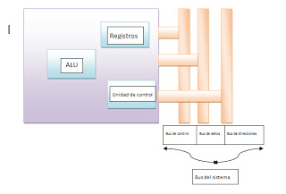
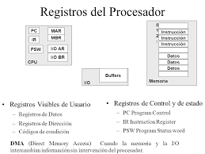
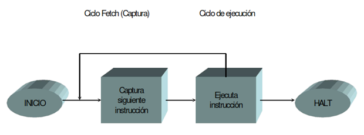
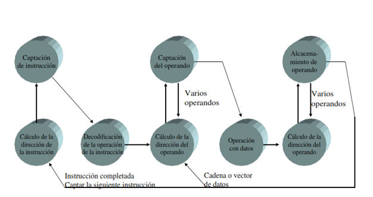
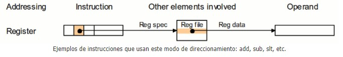
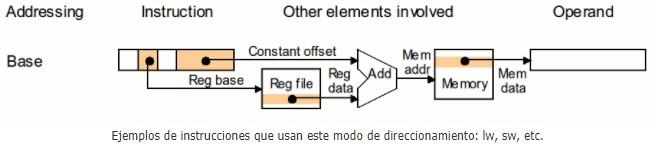
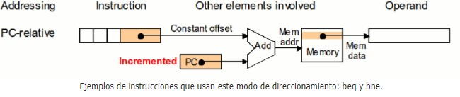
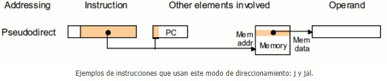
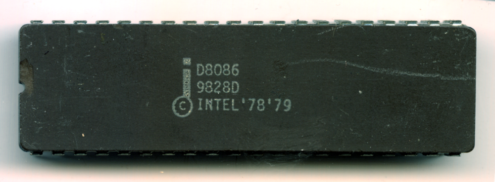
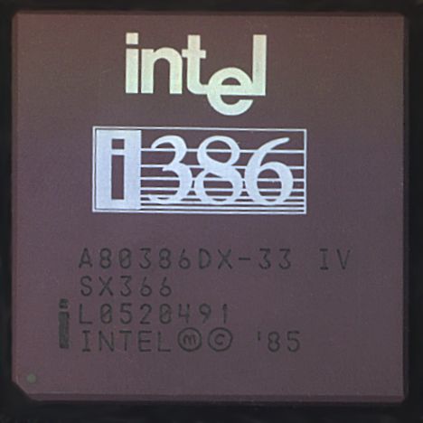

Un procesador, incluye tanto registros visibles por el usuario como registros de
control/estado. Los registros visibles por el usuario pueden ser de uso general o
tener una utilidad especial, mientras que los registros de control y estado se usan
para controlar el funcionamiento del procesador, un claro ejemplo es el contador
de programa.
Los procesadores utilizan la segmentación de instrucciones para acelerar la
ejecución. La segmentación de cauce se puede dividir en ciclo de instrucción en
varias etapas separadas que operan secuencialmente, tales como la captación de
instrucción, decodificación de instrucción, cálculo de direcciones de operando,
ejecución de instrucción y estructura del operando resultado.

Un registro es una memoria que esta ubicada en el procesador y se encuentra en el nivel más alto en la
jerarquía de memoria, por lo tanto tiene una alta velocidad pero con poca capacidad para almacenar datos que
va desde los 4 bits hasta los 64 bits dependiendo del procesador que se utilice. Los datos que almacena son
los que se usan frecuentemente
El Registro está organizado en una estructura jerárquica compuesta por subárboles con
sus respectivas claves, subclaves y entradas.
Son aquellos que pueden ser referenciado por medio del lenguaje maquina que ejecuta la CPU, los registro que
normalmente disponibles son:
*Registros de propósito general: son aquellos que pueden guardar tanto datos como
direcciones.
*Registro de datos: que pueden ser asignados por el programador a diversas funciones. En algunos
casos son de propósito general y pueden ser empleados por cualquier instrucción de máquina que lleve a cabo
operaciones
sobre los datos.
*Registros de direcciones: contienen direcciones en la memoria principal de datos y este tipo de
registro puede ser de propósito general o estar a un modo específico de direccionamiento.
Códigos de condición, también conocidos como indicadores o flags. Los códigos de condición, son bits
activados por el procesador como resultado de determinadas operaciones
Se utilizan para controlar las operaciones del procesador, la mayor parte de estos registros no son visibles
al usuario y algunos pueden ser accesibles a las instrucciones de maquina ejecutadas en un modo de control.
Los registros utilizados son los siguientes:
*Registro de direcciones de memoria (MAR): el cual contiene la dirección en donde se efectuará la
próxima
lectura o escritura de datos. El numero de direcciones depende del tamaño de la MAR.
*Registro de datos de memoria (MBR): contiene los datos que van a ser escritos en la memoria o los
que fueron
leídos en ella.
*Registro de direcciones de entrada y salida (I/O AR): especifica al dispositivo ya sea de entrada o
salida
*Registro de datos de entrada y salida (I/O BR): es una área temporal en donde se lleva a cabo el
intercambio
de datos entre el procesador y el dispositivo de entrada y salida que esta especificado en IOAR.
*Registro de instrucciones (IR): contiene la dirección de la siguiente instrucción que se va a
ejecutar.

En algún diseño concreto de procesador es posible encontrar otros registros
relativos a estado y control. Puede existir un puntero a un bloque de memoria que
contenga información de estado adicional (por ejemplo, bloques de control de
procesos). En las máquinas que usan interrupciones vectorizadas puede existir un
registro de vector de interrupción. Si se utiliza una pila para llevar a cabo ciertas
funciones (por ejemplo, llamada a subrutina), se necesita un puntero de pila del
sistema.
En un sistema de memoria virtual se usa un puntero a la tabla de
páginas. Por último, pueden emplearse registros para el control de operaciones de
E/S.
En el diseño de la organización de los registros de control y estado entran en
juego varios factores.
Una cuestión primordial es el soporte del sistema operativo.
Algunos tipos de información de control son de utilidad específica para el sistema operativo. Si el
diseñador del procesador posee una comprensión funcional del sistema operativo
que se va a utilizar, la organización de los registros puede adaptarse hasta cierto
punto a ese sistema operativo.
Otra decisión importante en el diseño es la distribución de información de control
entre registros y memoria. Es frecuente dedicar los primeros (más bajos) pocos
cientos o miles de palabras de memoria para fines de control. El diseñador debe
decidir cuánta información de control debiera estar en registros y cuánta en
memoria. Se presenta el compromiso habitual entre coste y velocidad.
El Ciclo Instrucción” cuenta con dos fases, la primera es la obtención y la segunda es la fase de ejecución:

Un ciclo de instrucción (también llamado ciclo de fetch-and-execute o ciclo
de fetch-decode-execute en inglés) es el período que tarda la unidad central de
proceso (CPU) en ejecutar una instrucción delenguaje máquina.
Comprende una secuencia de acciones determinada que debe llevar a cabo la
CPU para ejecutar cada instrucción en un programa. Cada instrucción del juego de
instrucciones de una CPU puede requerir diferente número de ciclos de instrucción
para su ejecución. Un ciclo de instrucción está formado por uno o más ciclos
máquina.
Para que cualquier sistema de proceso de datos basado en microprocesador (por
ejemplo un ordenador) o microcontrolador (por ejemplo un reproductor de MP3)
realice una tarea (programa) primero debe buscar cada instrucción en la memoria
principal y luego ejecutarla.

El objetivo de la segmentación es ejecutar simultáneamente diferentes etapas de distintas instrucciones, lo
cual permite aumentar el rendimiento del procesador sin tener que hacer más rápidas todas las unidades del
procesador (ALU, UC, buses, etc.) y sin tener que duplicarlas.
La división de la ejecución de una instrucción en diferentes etapas se debe realizar de tal manera que cada
etapa tenga la misma duración, generalmente un ciclo de reloj. Es necesario añadir registros para almacenar
los resultados intermedios entre las diferentes etapas, de modo que la información generada en una etapa
esté disponible para la etapa siguiente.
Ejemplo de
segmentación de instrucciones
La segmentación es como una cadena de montaje. En cada etapa de la cadena se lleva a cabo una parte del
trabajo total y cuando se acaba el trabajo de una etapa, el producto pasa a la siguiente y así sucesivamente
hasta llegar al final.
Si hay N etapas, se puede trabajar sobre N productos al mismo tiempo y, si la cadena está bien equilibrada,
saldrá un producto acabado en el tiempo que se tarda en llevar a cabo una de las etapas. De esta manera, no
se reduce el tiempo que se tarda en hacer un producto, sino que se reduce el tiempo total necesario para
hacer una determinada cantidad de productos porque las operaciones de cada etapa se efectúan
simultáneamente.
La segmentación de instrucciones es similar al uso de una cadena de montaje en
una fábrica de manufacturación. En las cadenas de montaje, el producto pasa a
través de varias etapas de producción antes de tener el producto terminado. Cada
etapa o segmento de la cadena está especializada en un área específica de la
línea de producción y lleva a cabo siempre la misma actividad. Esta tecnología es
aplicada en el diseño de procesadores eficientes.
A estos procesadores se les conoce como pipeline processors. Estos están
compuestos por una lista de segmentos lineales y secuenciales en donde cada
segmento lleva a cabo una tarea o un grupo de tareas computacionales. Los datos
que provienen del exterior se introducen en el sistema para ser procesados. La
computadora realiza operaciones con los datos que tiene almacenados
en memoria, produce nuevos datos o información para uso externo.
*Las arquitecturas y los conjuntos de instrucciones se pueden clasificar
considerando los siguientes aspectos:
*Almacenamiento de operandos en la CPU: dónde se ubican los operandos aparte
de la memoria.
*Número de operandos explícitos por instrucción: cuántos operandos se expresan
en forma explícita en una instrucción típica. Normalmente son 0, 1, 2 y 3.
*Posición del operando: ¿Puede cualquier operando estar en memoria?, o deben
estar algunos o todos en los registros internos de la CPU. Cómo se especifica la
dirección de memoria (modos de direccionamiento disponibles).
*Operaciones: Qué operaciones están disponibles en el conjunto de instrucciones.
Tipo y tamaño de operandos y cómo se especifican.
Contar con diferentes formatos de instrucciones, implica contar con diferentes formas de obtener los
operandos de las instrucciones. Por lo general a estas múltiples formas se les conoce como modos de
direccionamiento. Los modos de direccionamiento en MIPS son:
1. Direccionamiento por registro: donde los operandos son registros. Los datos a operar están contenidos en 2 registros de 32 bits y el resultado será colocado en otro registro, del mismo tamaño.

2. Direccionamiento base o desplazamiento: donde uno de los operandos está en una localidad de memoria cuya dirección es la suma de un registro y una constante que forma parte de la misma instrucción.
3. Direccionamiento inmediato: donde uno de los operandos es una constante que está en la misma instrucción.

4. Direccionamiento relativo al PC: donde se forma una dirección sumando una constante, que está en la instrucción, con el registro PC (Program Counter). El resultado de la suma corresponde a la dirección destino si un brinco condicional se va a realizar.

5. Direccionamiento pseudo directo: donde la dirección destino de un salto corresponde a la concatenación de 26 bits que están en la misma instrucción con los bits mas significativos del PC.

Es importante mencionar que estamos estudiando una arquitectura con direcciones de 32 bits, sin embargo,
MIPS, como muchas otras arquitecturas, tiene una extensión que maneja direcciones de 64 bits. Esto como una
respuesta a la necesidad de manejar programas cada vez mas grandes.
8086: Los registros del procesador, se usan para contener los datos con que se está trabajando puesto que
el acceso a los registros es mucho más rápido que los accesos a memoria. Se pueden realizar operaciones
aritméticas y lógicas, comparaciones, entre otras. Los modos del 8086 son indirectos por registro, indexados
o directos por registro.
Motorola 68000: El mismo direccionamiento lleva implícito el tipo de registro sobre el que trabaja
(direcciones o datos). Está basado en dos bancos de 8 registros de 32 bits. Un banco es de datos (Dn) y el
otro de punteros (An). Además contiene un contador de programa de 32 bits y un registro de estado de 16
bits.
80386: Para este microprocesador existe un modo nuevo que requiere un byte adicional denominado SIB (escala,
índice, base) que se añade al byte de operandos, es útil para direccionar elementos de vectores de
longitudes diferentes en bucles. Es una alternativa a los modos autoindexados que esta máquina no soporta.
 